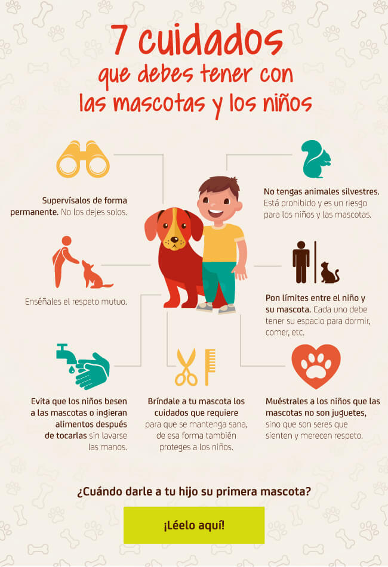
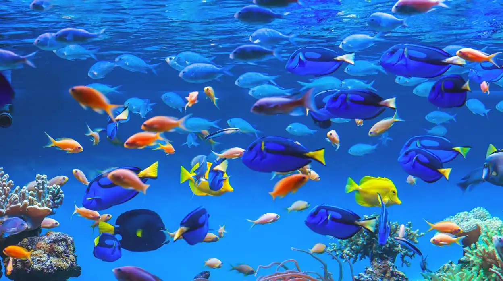

Los animales salvajes nos sorprenden con su diversidad y comportamientos únicos. En esta publicación, exploraremos algunas de las maravillas que la vida salvaje tiene para ofrecer.
Los leones, majestuosos y poderosos, son conocidos por ser los reyes de la sabana africana. Su melena distintiva y su comportamiento social hacen que sean fascinantes para los amantes de la vida salvaje.
Además de los leones, encontramos a las ágiles cebras, las elegantes jirafas y los astutos leopardos. Cada especie tiene su papel único en el ecosistema, contribuyendo a mantener el equilibrio natural.
Comentarios
¡Increíble artículo!
Los leones son fascinantes.
Ayuda a Laura a encontra su perrito
¡Comunidad solidaria, necesitamos su ayuda urgente! Laura ha perdido a su amado perrito y está angustiada. El peludo amigo responde al nombre de Guillermo y se extravió en la zona del Poblado el dia 4 de enero del 2023.
Laura y Guillermo agradecen de antemano cualquier ayuda que puedan brindar. ¡Juntos podemos hacer la diferencia y traer de vuelta a este miembro peludo a su hogar!
Comentarios
Usuario 1: Ojala lo encuentren, pobre de sus dueños...
Usuario 2: Esta muy lindo, ayudare a su busqueda.
🐾 Tips para el Cuidado Amoroso de tus Mascotas 🐾
¡Hola amantes de los animales! Sabemos lo importante que son nuestras mascotas en nuestras vidas, y queremos compartir algunos consejos para asegurarnos de que vivan vidas felices y saludables. 🏡❤️

¡Compártenos tus propios consejos y experiencias en los comentarios! Juntos, podemos asegurarnos de que nuestras mascotas vivan vidas plenas y felices. 🐶🐱💕 #CuidadoDeAnimales #AmorPeludo
Comentarios
Usuario 3: para mi es importante nuestras mascotas tengan una identificación clara con nuestra información de contacto.
Usuario 4: Los juguetes tambien son importantes, los juguetes no solo son divertidos, sino que también ayudan a prevenir el aburrimiento y promueven la actividad mental.
Explorando el Mundo Submarino
En esta publicación, sumérgete en las profundidades del océano y descubre la asombrosa variedad de criaturas que habitan en el mundo submarino.

Desde los coloridos peces tropicales hasta los imponentes tiburones, el océano alberga una increíble diversidad de vida marina. Acompáñanos en este viaje submarino y maravíllate con la belleza del mundo acuático.


Comentarios